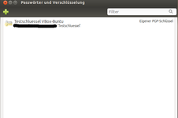

Seahorse
Dieser Artikel wurde für die folgenden Ubuntu-Versionen getestet:
Ubuntu 16.04 Xenial Xerus
Zum Verständnis dieses Artikels sind folgende Seiten hilfreich:
Seahorse  ist eine grafische Oberfläche für das Verschlüsselungsprogramm GnuPG, mit dem sich der GnuPG-Schlüsselbund verwalten sowie eigene GnuPG-Schlüssel erstellen lassen. Seahorse ist das Standardprogramm zur Schlüsselverwaltung unter Ubuntu/Ubuntu GNOME und löst den GNOME Schlüsselbund ab.
ist eine grafische Oberfläche für das Verschlüsselungsprogramm GnuPG, mit dem sich der GnuPG-Schlüsselbund verwalten sowie eigene GnuPG-Schlüssel erstellen lassen. Seahorse ist das Standardprogramm zur Schlüsselverwaltung unter Ubuntu/Ubuntu GNOME und löst den GNOME Schlüsselbund ab.
Für KDE-Benutzer gibt es mit KGpg ein vergleichbares Programm. Nähere Informationen zu GnuPG bzw. den Verschlüsselungstechniken, die dahinter stecken, erhält man in den Artikeln zu GnuPG und GnuPG/Technischer Hintergrund.
Installation¶
Seahorse kann über das folgende Paket installiert werden [1]:
seahorse
 mit apturl
mit apturl
Paketliste zum Kopieren:
sudo apt-get install seahorse
sudo aptitude install seahorse
Für die Nautilus-Integration (siehe unten) wird noch benötigt:
seahorse-nautilus (universe, ab Ubuntu 12.04)
mit apturl
Paketliste zum Kopieren:
sudo apt-get install seahorse-nautilus
sudo aptitude install seahorse-nautilus
Benutzung¶
Seahorse kann über den Menüeintrag "Passwörter und Verschlüsselung" gestartet werden [3]. Alternativ kann man den Befehl seahorse verwenden.
Hauptfenster¶
Mit Fortschreiten der Entwicklung des GNOME 3 Desktops änderte sich auch die grafische Oberfläche von Seahorse. Nachfolgend ist die aktuelle Version von Seahorse zu sehen.
|  |
| Seahorse 3.6 Hauptfenster |
| Seahorse 3.6 Eigene Schlüssel |
| Seahorse 3.6 Schlüsselbund |
Für die Grundfunktionen sind diese Unterschiede nicht wichtig. Ist das Hauptfenster von Seahorse geöffnet, können bei der alten Version über die vorhandenen Reiter der Werkzeugleiste die entsprechenden Werkzeuge gewählt werden. Bei der aktuellen Version können die entsprechenden Werkzeuge über "Ansicht -> Aktivieren" eingeblendet werden.
"Eigene Schlüssel" - beinhaltet die eigenen Schlüssel, sowohl SSH als auch GnuPG
"Vertrauenswürdige Schlüssel" - beinhaltet jene Schlüssel, von deren Authentizität der Anwender überzeugt ist. Entweder weil das selbst überprüft oder über das "Web of Trust" kontrolliert wurde. Weitere Informationen zum "Web of Trust" bietet der Artikel GnuPG/Web of Trust, insbesondere der Abschnitt Vertrauensstufen.
"Gesammelte Schlüssel" - beinhaltet alle anderen GnuPG-Schlüssel, die bspw. über das Internet gesammelt wurden und deren Authentizität gesichert ist
"Passwörter" - beinhaltet die Passwörter des GNOME-Schlüsselbunds. Die Möglichkeiten sind fast identisch mit denen des Programms gnome-keyring-manager, weswegen an dieser Stelle nur auf die Wiki-Seite GNOME Schlüsselbund verwiesen wird.
"Schlüsselbund" - beinhaltet eine Übersicht über alle Arten von angelegten Schlüsseln, Passwörter, Zertifikate und OpenSSH-Schlüssel
Werkzeuge¶
In der Werkzeugauswahl finden sich folgende Funktionen und Filter, mit deren Hilfe sich in Schlüssellisten der Überblick behalten lässt.
"Eigenschaften" - dieser Reiter erlaubt das Öffnen des ausgewählten Schlüssels, um Informationen einsehen zu können (siehe unten)
"Exportieren" - dieser Reiter erlaubt den Export eines öffentlichen Schlüssels in eine Datei, um diesen bspw. verteilen zu können. Es öffnet sich ein Standard-Dateidialog, mit dem der gewünschte Dateiname ausgewählt und anschließend exportiert wird. Es wird in jedem Fall nur der öffentliche Teil exportiert, selbst wenn der geheime Teil vorhanden ist.
"Signieren" - dieser Reiter erlaubt das Signieren eines Schlüssels mit einer eigenen Signatur, um diesen Glaubwürdigkeit zu verleihen (siehe GnuPG/Web of Trust). Es lässt sich wählen, wie genau die Identität des Besitzers geprüft wurde. Im Allgemeinen sollten aber nur solche Schlüssel signiert werden, bei denen "sehr sorgfältig" geprüft wurde. Die beiden weiteren Optionen am unteren Rand können auf den Voreinstellungen belassen werden.
"Suche" - dieser Reiter erlaubt das Suchen über Name und Mailadresse nach Schlüsseln in öffentlichen Key-Servern. Ist der gewünschte Schlüssel gefunden, kann dieser durch Betätigen des +-Buttons in den Schlüsselbund importiert werden.
Menü¶
Alle Funktionen der Werkzeuge lassen sich auch über das Menü erreichen. Hier die wichtigsten:
Schlüsselpaar erzeugen¶
Um ein neues Schlüsselpaar zu erzeugen, wählt man die Menüoption "Schlüssel -> Neuen Schlüssel erzeugen..." oder betätigt die Tasten Strg + N . Anschließend wählt man aus, dass man einen "PGP-Schlüssel" erzeugen will. Es öffnet sich ein Dialog, in dem folgende Daten abgefragt werden:
Vollständiger Name
E-Mail-Adresse
Kommentar (optional, z.B. Verwendungszweck)
Hinweis:
Seahorse nimmt die Bezeichnung "Vollständiger Name" sehr ernst, und verlangt deswegen mindestens ein Leerzeichen im Namen (zwischen Vor- und Nachname). Erst wenn der Name mindestens aus zwei Teilen besteht, wird der "Erstellen"-Knopf freigegeben.
Bei der Erzeugung des Schlüsselpaares wird viel Entropie benutzt, daher dauert es unter Umständen sehr lange (Stunden) bis der Schlüssel erzeugt wurde. Schneller geht es, wenn vorher das Paket haveged (universe) installiert wurde (Siehe auch: GnuPG):
Unter "Erweitere Schlüssel-Optionen" können noch Angaben zu der Gültigkeitsdauer, Stärke des Schlüssels und dem Schlüsseltyp gemacht werden, wenn die Voreinstellungen nicht genehm sind.
Als nächstes folgt die Eingabe des Passwortes. Es ist sinnvoll, ein sehr starkes Passwort zu wählen (mindestens 8 Zeichen; keine "echten" Wörter, sondern Buchstaben, Ziffern und Sonderzeichen gemischt.) Die Erzeugung des Schlüssels dauert einen kleinen Moment.
Schlüssel exportieren¶
Damit Kommunikationspartner ihre E-Mails an die Gegenseite verschlüsseln und mit dem geheimen Schlüssel erstellte Signaturen überprüfen können, brauchen sie jeweils den öffentlichen Schlüssel des Partners. In sehr frühen Versionen von Seahorse ließ sich der öffentliche Schlüssel exportieren, indem man mit einem Linksklick  den gewünschten Schlüssel markierte und "Öffentlichen Schlüssel exportieren ..." auswählte. Die erzeugte Datei konnte man dann per E-Mail oder mit einem USB-Stick dem Kommunikationspartner übergeben.
den gewünschten Schlüssel markierte und "Öffentlichen Schlüssel exportieren ..." auswählte. Die erzeugte Datei konnte man dann per E-Mail oder mit einem USB-Stick dem Kommunikationspartner übergeben.
Bei aktuellen Versionen des Programms gibt es diese Option nicht mehr. Stattdessen wird nach Markierung des entsprechenden Schlüssels mit "Bearbeiten -> Kopieren" der öffentliche Schlüssel in die Zwischenablage kopiert und kann von dort dann entweder direkt in eine Mail eingefügt oder mittels eines Editors in einer neuen Datei abgespeichert werden.
Schlüssel importieren¶
Bekommt man nun einen öffentlichen Schlüssel von einem Bekannten als Datei (meist als .asc-Datei), so kann man diesen in Seahorse importieren. Über die Menüoption "Schlüssel -> Importieren ..." oder Strg + I kann man die Schlüsseldatei auswählen.
Schlüssel-Eigenschaften¶
Das Eigenschaften-Fenster eines Schlüssels sieht jeweils etwas anders aus, je nachdem, um welche Art Schlüssel es sich handelt. Für GPG-Schlüssel gibt es drei Reiter:
Eigentümer¶
Der erste Reiter "Eigentümer" ist in beiden Fällen fast identisch. Es werden Name und E-Mail-Adresse des Eigentümers, Schlüsselkennung und ein paar andere Daten (u.U. ein in den Schlüssel integriertes Foto) angezeigt.
Namen und Signaturen¶
Dieser Reiter existiert nur in den Eigenschaften von eigenen Schlüsseln, bei denen man auch im Besitz des geheimen Schlüsselteils ist. Man kann hier u.a. neue Identitäten zum Schlüssel hinzufügen und festlegen, welche Identität die "primäre" ist (das hat nur Auswirkungen auf die Anzeige des Schlüssels in Listen, nicht auf die Funktion).
Man kann den Schlüssel auch signieren, wenn man z.B. mehrere Schlüssel besitzt und diese untereinander signieren möchte.
Vertrauen¶
Hinweis:
Sollte Evolution beim Versenden einer mittels PGP verschlüsselten E-Mail einen Fehler anzeigen:
"gpg: [stdin]: encryption failed: unbrauchbarer öffentlicher Schlüssel"
ist folgendes Vorgehen angezeigt. Im öffentlichen Schlüssel des Empfängers muss man im Reiter "Vertrauen" die Schaltfläche "Diesen Schlüssel signieren" auswählen und den sich öffnenden Dialog bestätigen (siehe dazu folgenden Abschnitt). |}}
Dieser Reiter wird nur bei fremden Schlüsseln angezeigt. Hier kann man bestätigen, dass man sich von der Identität des Schlüsselbesitzers überzeugt hat. Wenn man dies bejaht hat, kann man den Schlüssel mit seinem eigenen signieren und so auch gegenüber anderen Leuten die Identität des Besitzers bestätigen (siehe GnuPG/Web of Trust).
Man kann hier auch festlegen, dass man dem Besitzer auch bei der Signierung anderer Schlüssel vertraut, so dass das Vertrauen weitervererbt werden kann. Das entspricht der Vertrauensstufe "vollständig" aus dem folgenden Reiter und sollte nur in Ausnahmefällen verwendet werden. Außerdem werden in diesem Reiter auch die Signaturen angezeigt, die sich auf dem Schlüssel befinden.
Hinweis:
Etwas gewöhnungsbedürftig ist, dass während man Seahorse benutzt, die Schlüssel von Leuten importiert werden, die die vorhandenen Schlüssel signiert haben. Die Liste der Schlüssel kann also ziemlich schnell recht lang werden, wenn man z.B. ein paar Schlüssel bekannter Open-Source-Gurus mit vielen Signaturen im Schlüsselbund hat.
Diese Aktivitäten führen anscheinend öfter dazu, dass der "Eigenschaften -> Vertrauen"-Dialog einfriert und sich kurz darauf selbständig schließt. Das ist sehr ärgerlich, aber auf die Funktion des Rests von Seahorse hat das keine Auswirkung. Ein Sicherheitsrisiko stellt das unkontrollierte Importieren fremder Schlüssel auch nicht dar, da diesen Schlüsseln kein automatisches Vertrauen entgegengebracht wird.
Details¶
Hier gibt es ein paar Informationen zum Schlüssel zu betrachten, die sich teilweise mit denen aus dem ersten Reiter "Eigentümer" überschneiden. Ändern kann man hier bei Schlüsseln anderer Leute nur die Vertrauensstufe (siehe Vertrauensstufen).
In Bezug auf eigene Schlüssel gibt es da ein paar mehr Einstellungsmöglichkeiten. So kann man hier die Lebensdauer des Schlüssels ändern oder den gesamten Schlüssel inkl. geheimem Teil exportieren (nur für Backup-Zwecke!). Zur Weitergabe an Kommunikationspartner sollte man die Export-Funktion aus der Werkzeugleiste des Seahorse-Fensters benutzen, die nur den öffentlichen Teil exportiert.
Im unteren Bereich des Fensters kann man die Unterschlüssel verwalten und z.B. unterschiedliche Verfallsdaten für den Signier-(DSA-) und den Verschlüsselungs-(ElGamal-)Schlüssel einstellen sowie Schlüssel widerrufen.
Hinweis:
Es ist ratsam, gleich bei der Schlüsselerzeugung ein entsprechendes Widerrufszertifikat zu erstellen und sicher zu verwahren. Nach einem Verlust des geheimen Schlüssels ist ein nachträgliches Erstellen des Widerrufs nämlich nicht mehr möglich. Das Erstellen dieses Zertifikats ist innerhalb von Seahorse aber anscheinend leider nicht möglich, so dass man auf das GnuPG-Kommandozeilenprogramm zurückgreifen muss.
Desktop-Integration¶
Hinweis:
Bei einigen Funktionen der Anwendungen kann es zu Abweichungen kommen, sowohl technisch als auch optisch, was der der Entwicklung der Desktops sowie der Anwendungen selbst geschuldet ist. Dies bedeutet, das folgenden Beschreibungen einige Zusatzinformationen beigefügt wurden, die auf diesen Umstand aufmerksam machen.
Seahorse ist nicht nur ein alleinstehendes Programm zur Schlüsselverwaltung, sondern bietet auch anderen GNOME-Anwendungen Verschlüsselungsdienste an. Unter anderem werden diese vom Dateimanager Nautilus und vom Texteditor gedit genutzt. Außerdem gab es früher ein Applet für das GNOME Panel. Aktuelle grafische Oberflächen wie GNOME 3 und Unity unterstützen dies nicht mehr. Die Passphrase des Schlüssels wird dabei bei Bedarf mit Hilfe eines Dialogfensters abgefragt.
Nautilus¶
Um die Seahorse-Funktionen in Nautilus zu nutzen, braucht man nichts extra zu konfigurieren. Es genügt, Nautilus nach der Installation von Seahorse neu zu starten. Danach stehen die entsprechenden Möglichkeiten zur Verfügung.
Man findet im Kontextmenü  einer beliebigen Datei die zusätzlichen Einträge "Verschlüsseln..." und "Signieren".
einer beliebigen Datei die zusätzlichen Einträge "Verschlüsseln..." und "Signieren".
Verschlüsseln¶
Möchte man eine Datei verschlüsseln, so öffnet sich ein Dialog mit allen öffentlichen Schlüsseln, die man im Schlüsselbund hat. Hier kann man beliebig viele auswählen, mit denen die Datei verschlüsselt werden soll. Alle Besitzer dieser Schlüssel können die Datei später mit ihrem privaten Schlüssel entschlüsseln. Technisch wird dies erreicht, indem die Datei mit jedem Schlüssel einzeln bearbeitet wird und dann die Ergebnisse aneinander gehängt werden. Die entstehende Datei mit der Endung .pgp ist also umso größer, je mehr Empfänger man gewählt hat.
Nebenbei kann man diese Datei auch noch digital signieren, damit der Empfänger die Herkunft verifizieren kann.
Möchte man eine Datei nur zur eigenen Verwendung verschlüsseln, muss man natürlich den eigenen Public-Key auswählen. Außerdem empfiehlt sich in diesem Fall, das Original sicher zu löschen.
Hinweis:
Leider benutzt Nautilus nicht das sogenannte "ASCII-Armor-Format" mit der Endung .asc zur Verschlüsselung, sondern das binäre PGP-Format. Ein späteres Copy-and-Paste der verschlüsselten Datei in eine andere Applikation ist also nicht möglich.
Signieren¶
Noch einfacher ist das Signieren einer Datei. Nach der Auswahl von "Signieren" aus dem Kontextmenü einer Datei muss man nur den eigenen geheimen Schlüssel auswählen, und es wird eine Signaturdatei mit der Endung .sig erzeugt. Diese kann man dann mit der Originaldatei verbreiten, so dass jeder die Echtheit der Datei überprüfen kann.
Entschlüsseln¶
Eine verschlüsselte Datei mit der Endung .pgp (oder auch .asc) kann man einfach entschlüsseln, indem man im Kontextmenü "Mit Datei entschlüsseln öffnen" auswählt. Es erscheint ein Dateidialog, in dem man den Namen der entschlüsselten Datei wählen kann. Wenn die verschlüsselte Datei gleichzeitig auch signiert ist, wird die Signatur gleich automatisch mit geprüft (s.u.).
Signatur prüfen¶
Über "Mit Signatur-Datei überprüfen öffnen" aus dem Kontextmenü einer .sig-Datei kann man prüfen, ob die zugehörige Datei (ohne die .sig-Endung) tatsächlich vom angeblichen Absender stammt und nicht zwischendurch verändert wurde. Das Ergebnis der Prüfung erscheint in einem kleinen Meldefenster am rechten unteren Bildschirmrand.
gedit¶
Um die Verschlüsselungsfunktionen von Seahorse in gedit nutzen zu können, muss erst einmal das entsprechende Plugin aktiviert werden. Dies funktioniert über "Bearbeiten -> Einstellungen -> Plugins -> Text-Verschlüsselung". Dieses Plugin war leider nur bis einschließlich Ubuntu 11.04 verfügbar.
Verschlüsseln/Signieren¶
Wie der Name des Plugins schon andeutet, kann man damit Text verschlüsseln (bzw. signieren), und zwar direkt im Textfenster des Editors, wobei praktischerweise das ASCII-Armor-Format Verwendung findet. Hat man vorher mit der Maus einen Textabschnitt markiert, so wird durch Auswahl des entsprechenden Menüpunkts aus dem "Bearbeiten"-Menü nur dieser Abschnitt verschlüsselt/signiert, ansonsten der gesamte Text. Die Auswahl des Schlüssels ist identisch mit der in Nautilus.
Entschlüsseln/Signatur prüfen¶
Durch Auswahl von "Bearbeiten -> Entschlüsseln/Überprüfen" werden alle PGP-Blöcke im Text entschlüsselt und alle Signaturen überprüft. Das Ergebnis der Signaturprüfung wird wie bei Nautilus in einem Nachrichtenfenster angezeigt.
Passwörter speichern¶
Um der besseren Übersicht willen empfiehlt es sich, für die eigenen Passwörter einen separaten Schlüsselbund anzulegen. Hierzu geht man auf "Datei -> Neu", wählt "Password Schlüsselbund" aus und vergibt einen Namen, der keine Umlaute enthalten darf (!). Anschließend kann man über denselben Menüpunkt "gespeichertes Passwort" anklicken, den gewünschten Schlüsselbund auswählen und ggf. Benutzername und Passwort speichern, damit man es sich nicht merken muss, sondern bei Bedarf hier wiederfindet.
Applet¶
Seahorse bot früher ein Applet an, dass sich im GNOME-Panel einnistet. Hierfür mit einem Rechtsklick auf das Panel und "Zum Panel hinzufügen" das Applet "Sonstiges -> Verschlüsselung des Textes in der Zwischenablage" auswählen. Die Zwischenablage ist das, wo mit der linken Maustaste markierte Texte landen, die man dann mit der mittleren Taste woanders einfügen kann. Mit Hilfe des Seahorse-Applets kann man diese Zwischenablage zwischen dem Ausschneiden und Einfügen ändern, also z.B. eine Klartext-Zwischenablage verschlüsseln. Das Hinzufügen des Applets sowie die Zusammenarbeit (Verschlüsseln des Textes) mit der Zwischenablage war jedoch auf GNOME 2 beschränkt und funktioniert in Unity und GNOME 3 nicht.
Einstellungen¶
Die Voreinstellungen sind etwas ungünstig gewählt, also sollte man sie durch Rechtsklick auf das Seahorse-Applet und Auswahl von "Voreinstellungen" ändern. "Zeige Status der Zwischenablage im Panel" ist z.B. ziemlich sinnvoll. Dadurch erkennt man am Applet, ob sich in der Zwischenablage Klartext (Text-Icon), Chiffre (Vorhängeschloss) oder eine Signatur (rotes Siegel) befindet (wobei das Applet diese Unterscheidung danach trifft, ob der Text mit einer bekannten Zeichenkette á la "-----BEGIN PGP MESSAGE-----" beginnt).
"Inhalte der Zwischenablage anzeigen nach: Entschlüsseln oder Überprüfen" ist auch sinnvoll. Schließlich ist das der Sinn der Sache, wenn man etwas entschlüsseln will, und so braucht man nicht jedesmal erst ein offenes Editor-Fenster zu suchen, in welches man den Text mal eben reinkopieren kann. Es öffnet sich dann automatisch ein eigenes Fenster, das den entschlüsselten Text anzeigt.
Das voreingestellte "Inhalte der Zwischenablage anzeigen nach: Verschlüsseln oder Signieren" kann man dagegen getrost deaktivieren. Es handelt sich sowieso nur um Buchstabensalat, und für Copy-and-Paste braucht man das auch nicht, da sich ja der verschlüsselte Text dann bereits in der Zwischenablage befindet.
Benutzung¶
Benutzt wird das Applet mit der linken Maustaste . Je nachdem, welche Art von Inhalt sich in der Zwischenablage befindet, kann man sie entweder verschlüsseln, signieren, oder entschlüsseln/überprüfen, was genauso funktioniert wie oben im Abschnitt Nautilus beschrieben. Der umgewandelte Text ersetzt die Zwischenablage und kann sofort in jede beliebige Applikation eingefügt werden.
Der Seahorse-Agent¶
Wenn man sich nach der Installation von Seahorse das nächste Mal anmeldet, wird automatisch der "Seahorse-Agent" aktiv und macht sich als gelbes Vorhängeschloss im Benachrichtigungsfeld des Panels bemerkbar, sobald er mindestens einen Schlüssel aufgenommen hat. Der Seahorse-Agent speichert Passphrasen von Schlüsseln nach der Verwendung für eine bestimmte Zeit in einem Cache, so dass man die Passphrase nicht ständig einzugeben braucht.
Mit einem Linksklick auf das Symbol öffnet sich ein Fenster, in dem alle z.Zt. aktiven Schlüssel aufgelistet werden. Was die SSH-Schlüssel angeht, kommuniziert der Seahorse-Agent zu diesem Zweck mit dem SSH-Agenten. Leider kann man keinen Schlüssel einzeln aus dem Cache entfernen, sondern nur alle zusammen.
Mit einem Rechtsklick gelangt man in ein kleines Menü, aus dem heraus man ebenfalls das Fenster öffnen oder den Cache löschen kann. Über den Eintrag "Cache Preferences" gelangt man direkt in den Reiter "Passwort-Zwischenspeicher" der Seahorse-Einstellungen.
Links¶
GnuPG/Technischer Hintergrund - Hintergrundinformationen zur Funktionsweise von GnuPG-Verschlüsselung
GnuPG/Web of Trust - Globale Schlüsselverbreitung
SSH - Authentifizierung über Public Keys
- Erstellt mit Inyoka
-
 2004 – 2017 ubuntuusers.de • Einige Rechte vorbehalten
2004 – 2017 ubuntuusers.de • Einige Rechte vorbehalten
Lizenz • Kontakt • Datenschutz • Impressum • Serverstatus -
Serverhousing gespendet von